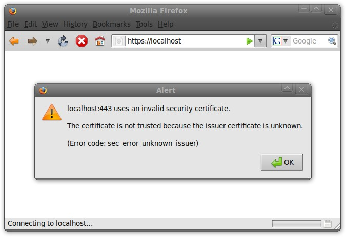
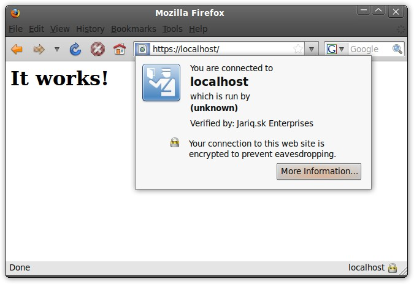
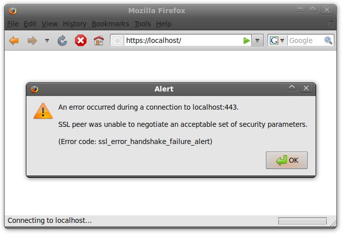
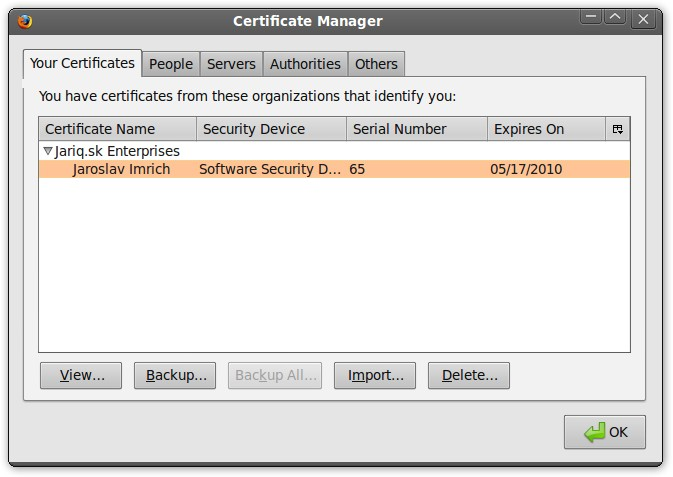
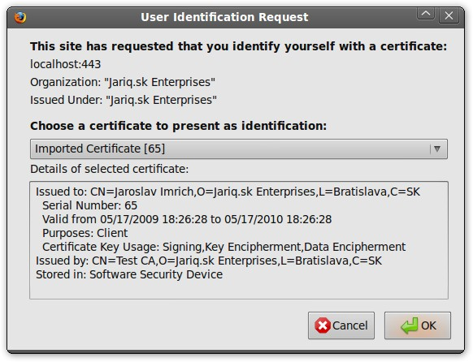
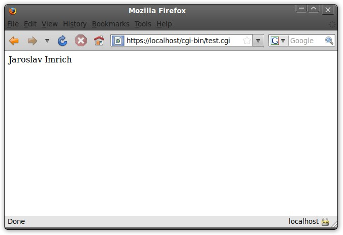

Last Updated on Saturday, 12 September 2009 08:42
Author: Jaroslav Imrich
This article describes configuration techniques of module mod_ssl, which extends a functionality of Apache HTTPD to support SSL protocol. The article will deal with authentication of server (One-way SSL authentication), as well as it will also include authentication of clients by using certificates (Two-way SSL authentication).
If you have decided to enable a SSL ( Secure Sockets Layer ) protocol on your web server it may be because you would like to extend its functionality to achieve an integrity and confidentiality for a data transferred on unsecured networks. However, this protocol with the combination of PKI ( Public Key Infrastructure ) principles can also along the side of integrity and confidentiality provide authentication between both sides involved in the client-server communication.
One-way SSL authentication allows a SSL client to
confirm an identity of SSL server. However, SSL server cannot confirm an
identity of SSL client. This kind of SSL authentication is used by
HTTPS protocol and many public servers around the world this way
provides services such as webmail or Internet banking. The SSL client
authentication is done on a “application layer” of OSI model by the
client entering an authentication credentials such as username and
password or by using a grid card.
Two-way SSL authentication also known as mutual SSL
authentication allows SSL client to confirm an identity of SSL server
and SSL server can also confirm an identity of the SSL client. This type
of authentication is called client authentication because SSL client
shows its identity to SSL server with a use of the client certificate.
Client authentication with a certificate can add yet another layer of
security or even completely replace authentication method such us user
name and password.
In this document, we will discuss configuration of both types of SSL authentication one-way SSL authentication and two-way SSL authentication.
This section briefly describes a procedure to create all required certificates using an openssl application. The whole process of issuing openssl certificates is simple. However, in case when a larger amount of issued certificates is required below described procedure would be inadequate, and therefore, I recommend for that case use OpenSSL's CA modul. Reader is expected to have a basic knowledge of PKI, and for that reason all steps will be described just briefly. Please follow this link if you wish to refresh your knowledge about Public key infrastructure.
All certificates will be issued by using OpenSSL application and
openssl.cnf configuration file. Please save this file into a directory
from which you would run all openssl commands. Please note that this
configuration file is optional, and we use it just to make the whole
process easier.
openssl.cnf:
[ req ]
default_md = sha1
distinguished_name = req_distinguished_name
[ req_distinguished_name ]
countryName = Country
countryName_default = SK
countryName_min = 2
countryName_max = 2
localityName = Locality
localityName_default = Bratislava
organizationName = Organization
organizationName_default = Jariq.sk Enterprises
commonName = Common Name
commonName_max = 64
[ certauth ]
subjectKeyIdentifier = hash
authorityKeyIdentifier = keyid:always,issuer:always
basicConstraints = CA:true
crlDistributionPoints = @crl
[ server ]
basicConstraints = CA:FALSE
keyUsage = digitalSignature, keyEncipherment, dataEncipherment
extendedKeyUsage = serverAuth
nsCertType = server
crlDistributionPoints = @crl
[ client ]
basicConstraints = CA:FALSE
keyUsage = digitalSignature, keyEncipherment, dataEncipherment
extendedKeyUsage = clientAuth
nsCertType = client
crlDistributionPoints = @crl
[ crl ]
URI=http://testca.local/ca.crl
As a first step you need to generate self-signed certificate CA. Once prompted for value of “Common Name” insert string “Test CA”:
# openssl req -config ./openssl.cnf -newkey rsa:2048 -nodes \
-keyform PEM -keyout ca.key -x509 -days 3650 -extensions certauth -outform PEM -out ca.cer
If you have not encountered any complications running the above command you would find in your current directory a file “ca.key” with private key of certificate authority (CA) and ca.cer with its self-signed certificate.
In the next step you need to generate private SSL key for the server:
# openssl genrsa -out server.key 2048
To generate Certificate Signing Request in PKCS#10 format you would use a following command as a common name you can specify its hostname – for example “localhost”.
# openssl req -config ./openssl.cnf -new -key server.key -out server.req
With self-signed certificate authority issue server certificate with serial number 100:
# openssl x509 -req -in server.req -CA ca.cer -CAkey ca.key \
-set_serial 100 -extfile openssl.cnf -extensions server -days 365 -outform PEM -out server.cer
New file server.key contains server's private key and file server.cer is a certificate itself. Certificate Signing Request file server.req is not needed any more so it can be removed.
# rm server.req
Generete private key for SSL client:
# openssl genrsa -out client.key 2048
As for the server also for client you need to generate Certificate Signing Request and as a Common Name, I have used string: “Jaroslav Imrich”.
# openssl req -config ./openssl.cnf -new -key client.key -out client.req
With your self-signed Certificate Authority, issue a client certificate with serial number 101:
# openssl x509 -req -in client.req -CA ca.cer -CAkey ca.key \
-set_serial 101 -extfile openssl.cnf -extensions client -days 365 -outform PEM -out client.cer
Save client's private key and certificate in a PKCS#12 format. This certificate will be secured by a password and this password will be used in the following sections to import the certificate into the web browser's certificate manager:
# openssl pkcs12 -export -inkey client.key -in client.cer -out client.p12
File “client.p12” contains a private key and the client's certificate, therefore files “client.key”, “client.cer” and “client.req” are no longer needed, so these files can be deleted.
# rm client.key client.cer client.req
Once the server's private key and certificate are ready, you can
begin with SSL configuration of Apache web server. In many cases, this
process is comprised of 2 steps – enabling mod_ssl and creating virtual
host for port 443/TCP.
Enabling mod_ssl is very easy, all you need to do is to open httpd.conf file and remove comment mark from line:
LoadModule ssl_module modules/mod_ssl.so
Just because the server will serve the HTTPS requests on port 443 in is important to enable port 433/TCP in the apaches's configuration file by adding a line:
Listen 443
Definition of a virtual host can be also defined in “httpd.conf” file and should look as the one below:
<VirtualHost _default_:443>
ServerAdmin webmaster@localhost
DocumentRoot /var/www
Options FollowSymLinks
AllowOverride None
Options Indexes FollowSymLinks MultiViews
AllowOverride None
Order allow,deny
allow from all
ScriptAlias /cgi-bin/ /usr/lib/cgi-bin/
AllowOverride None
Options +ExecCGI -MultiViews +SymLinksIfOwnerMatch
Order allow,deny
Allow from all
LogLevel warn
ErrorLog /var/log/apache2/error.log
CustomLog /var/log/apache2/ssl_access.log combined
SSLEngine on
SSLCertificateFile /etc/apache2/ssl/server.cer
SSLCertificateKeyFile /etc/apache2/ssl/server.key
BrowserMatch ".*MSIE.*"
nokeepalive ssl-unclean-shutdown
downgrade-1.0 force-response-1.0</VirtualHost>
In the example above directive “SSLEngine on” enables SSL support virtual host. Directive “SSLCertificateFile” defines a full path of the server's certificate and finally directive “SSLCertificateKeyFile” defines a full path to server's private key. If the private key is secured by password this password will be only needed when starting apache web server.
Any changes to https.conf file such as the changes above require a web server restart. If you encounter some problems during the restart it is likely that this is due to configuration errors in your https.conf file. The actual error should appear in deamon's error log.
Testing of a functionality of our new configuration can be done by using a web browser. The fist attempt to for connection most certainly displays an error message, that the attempt to verify server's certificate failed because, the issuer of the certificate is unknown.

Importing CA's certificate into the web browser's using its Certificate manager will solve this problem. To add a certificate into a Mozilla Firefox browser navigate to “Preferences > Advanced > Encryption > View certificates > Authorities” and during the import tick the box which says: “This certificate can identify web sites”.
Next attempt to connect the web server should be successful.

If you want to avoid the need of importing a CA's certificate into the web browser, you can buy server certificate from some commercial authority, which certificates are distributed by the web browser.
If you have decided that you will require certificate authentication from every client, all you need to do is to add following lines into a virtual host configuration file:
SSLVerifyClient require
SSLVerifyDepth 10
SSLCACertificateFile /etc/apache2/ssl/ca.cer
“SSLVerifyClient require” directive ensures that clients which do not
provide a valid certificate from some of the trusted Certificate
authorities would not be able to communicate with SSL server. Some CA
rely on another CA, which may rely yet on another and so on. Directive
“SSLVerifyDepth 10” specifies how far down in the chain of CA reliance,
the server will accept CA signed certificate as valid. If, for instance,
SSLVerifyDepth directive will hold value 1 then the client's
certificate must be signed directly by your trusted CA. In this article,
the client's certificate is signed directly by CA and therefore the
only sensible value for SSLVerifyDepth directive is 1. Last directive
“SSLCACertificateFile” specifies a full path to a Certificate Authority
certificate by which a client's certificate was signed.
Do not forget to restart your apache web server after any change made to its configuration files:
# apachectl graceful
If you try to connect to the SSL server without a client certificate an error message will pop up:

All what needs to be done is to import previously created a client certificate in PKCS#12 form into to firefox's certificate manager under “Your Certificates” section. This task can be done by navigating to menu then “Preferences > Advanced > Encryption > View certificates > Your certificates”. During the import, you will be asked to enter a password which had been set during the creation of the certificate. Depending on the browser version you use, you may also need to set main password for software token, which is used by the browser to safely store certificates.

If you make another attempt to connect to the SSL server, browser will automatically pop-up an appropriate certificate for SSL server authentication.

After the selection of a valid certificate, the connection to the SSL server will be granted.
Values from a client certificate can be used by web application for
precise identification of the user. It is easy as to use a directive
“SSLOptions +StdEnvVars” and mode_ssl will provide information taken
from a client certificate as well as a certificate itself to the given
web application.
This operation will take a lot of server's
run-time, and therefore, it is recommended to use this functionality on
for files with certain extension or for files within certain directory
as it is shown in the following example:
<FilesMatch ".(cgi|shtml|phtml|php)$">
SSLOptions +StdEnvVars
</FilesMatch>
<Directory /usr/lib/cgi-bin>
SSLOptions +StdEnvVars
</Directory>
List of the available variables can be found in a module mod_ssl documentation. Accessing variables provided my mod_ssl is language specific. However, for the sake of completeness, here is a sample of CGI script written in perl which will display a “Common Name” of the client:
#!/usr/bin/perl
use strict;
print "Content-type: text/htmln";
print "n";
print $ENV{"SSL_CLIENT_S_DN_CN"}
Here is an output of the script after its execution by the SSL web server:

Mod_ssl also supports a use of above mentioned variables directly from the server's configuration. This way you can restrict an access to some resources for employees of a certain company:
<Location /private/>
SSLRequire %{SSL_CLIENT_S_DN_O} eq “Jariq.sk Enterprises”
</Location>
These variables can be also used in conjunction with configuration directive “CustomLog” to enable logging a client's access details . More information can be found in the official mod_ssl documentation.
If you have not heard about Two-way SSL authentication yet, it is likely that after reading this article you asked yourself why is this type of SSL authentication not used often in the production environment. The answer is simple – cryptic operations used during SSL connections are difficult to process in regard to the web server resources. It is possible to boost web server performance by so called SSL accelerators ( cards containing a processor optimized for cryptic operations). However, in many cases SSL accelerators are more expensive than the server itself and therefore, Two-way SSL authentication is not attractive to use in the web server environment.
openning a port 443 is not required, if a configuration file /etc/apache2/ports.conf has defined an IfModule mod_ssl.c directive:
<IfModule mod_ssl.c>
Listen 443
</IfModule>
Enabling ssl module can be done by:
a2enmod ssl
If directive IfModule mod_ssl.c in /etc/apache2/ports.conf is defined command a2enmod ssl will also automatically enable listenning on port 443.
Definition of virtual host file needs a slight change:
BrowserMatch “.*MSIE.*” \
nokeepalive ssl-unclean-shutdown \
downgrade-1.0 force-response-1.0